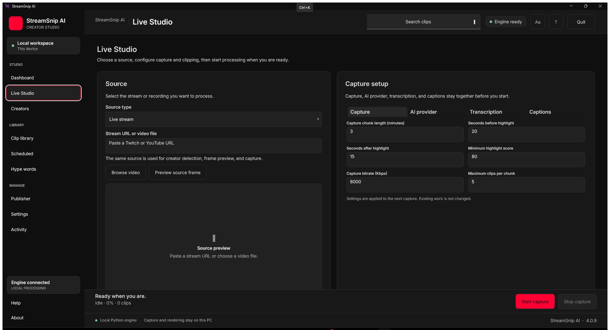
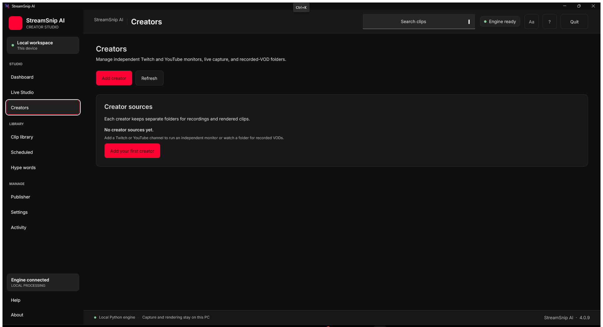
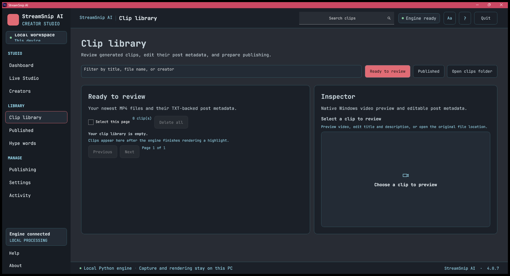

Live stream, VOD or file
Windows stream clipping for creators
Capture live streams and recorded VODs, review AI-ranked highlights, and publish selected clips from one native Windows desktop app.
Twitch + YouTube · Windows 10 / 11

StreamSnip AI workflow
One workflow covers live capture, recorded VODs and local video. You decide which clips move from review into publishing.
Local speech model
Score candidate moments
Adjust clip and metadata
Send through Zernio
Review stays in your hands.Candidate scores help prioritize moments. Publishing remains a manual choice.
Live stream and VOD capture
Monitor supported Twitch and YouTube creators, record live sessions, or process recorded VODs and local video files through the same clipping workflow.
- Start and stop live capture explicitly.
- Set capture quality and output preferences.
- Keep source recordings available for review before extraction.

LIVE STUDIOCapture configuration
Creator-specific workspaces
Each saved creator has a separate workspace. Live recordings and recorded-VOD work have separate folders for every creator.

Creator A
/Creators/Creator-A/
Live
Recorded VOD
Creator B
/Creators/Creator-B/
Live
Recorded VOD
Creator folders keep monitoring sources and the resulting media organised independently.
Clip review and framing
Generated clips stay with their titles, descriptions, scores and processing status. Review the video and make changes before sending it to a platform.
- Keep unpublished work separate from confirmed published clips.
- Adjust aspect ratio, crop regions and output framing.
- Delete individual clips or manage selections in bulk.
Facecam detection is available, with manual crop adjustment when you want to refine the result.

CLIP LIBRARYReview before publishing
Publishing with Zernio
Connect your Zernio API key, review the generated post details, and send the selected clip to a connected social destination from the StreamSnip workflow.
StreamSnip AI
Zernio API
Post titles and descriptions remain editable in the review flow. The connected Zernio account controls which destinations are available for each publish action.
- Connect one or more Zernio API keys.
- Choose available social accounts for a post.
- See publishing results for each destination.

Only destinations confirmed as successful are recorded as published. Zernio and the connected platforms control account availability and posting quotas.
FACEBOOK · INSTAGRAM · YOUTUBELocal media processing
Speech transcription and video rendering run locally. Choose the analysis provider that fits your setup. Configured hosted analysis receives transcript text.
- Run local speech transcription with Faster-Whisper.
- Choose a supported local or hosted provider for highlight analysis.
- Render the final clip on your Windows machine.
Media sourceLive recording, VOD or local video
Local transcriptionFaster-Whisper speech model
Selected AI providerTranscript analysis, scoring and metadata
Local video renderFFmpeg output on your machine
Clip publishing stays in your hands
AI can rank candidate moments and prepare metadata. You review the clip, framing and destination before publishing.
SELECTED CLIP